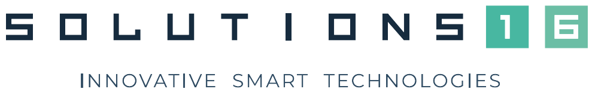

Jan 2022 - Present
InTune Auto, Software Engineer
- Engineered 9 major projects encompassing digital authorization, share via Twilio SMS and Gmail, Carfax integration, OpenAI utilization, EC2 image attachments, CapitalOS Fintech collaboration, automated vehicle reminders, appointment scheduling, and identity verification.
- Implemented comprehensive testing strategies, utilizing Cypress for frontend tests and backend integration tests, while also focusing on data pagination and component modularity to enhance system maintainability.
- Leveraged a diverse technology stack including Heroku, Netlify, DataDog, AWS ECR and ECS, and Docker, while coding in TypeScript, React, Jersey, jOOQ, and PostgreSQL to build and deploy scalable, reliable solutions.

Sep 2022 - Jan 2023
Solutions16, Software Engineer
- Developed an end-to-end monitoring system using MosquittoMQTT, DigitalOcean, LilyGO SIM7600, and ESP32, integrating it with Blynk and MongoDB to collect over 200,000 data points.
- Established just-in-time alerts for Whatsapp and Telegram using Meta for Developers and BotFather respectively, successfully preventing 2 instances of severe property damage due to pump room leaks.
- Automated email notifications through Blynk IoT platform, eliminating the need for manual 8-hour updates.
Aug 2022 - Dec 2022
National University of Singapore, Teaching Assistant

- Designed class materials and conducted tutorial and lab sessions for 27 students in the Data Structures and Algorithms module during the current semester
- Mentored 12 student teams in self-directed software development projects, focusing on Unity game development and Telegram bot creation. Achieved 2 Gemini (Intermediate) level and 10 Apollo 11 (Advanced) level teams.
Apr 2019 - May 2021
Republic of Singapore Navy, Marine Systems Engineer
- Spearheaded creation of Android mobile application using Android Studio to facilitate accuracy of data logging and halving the time taken for the calculation process
- Collaborated in a team of 3 to maintain and upgrade ship's internal systems to maintain operational readiness